A look inside you
Light, steam, flour and good company, captured on ordinary days.

First brew at 7:02 am
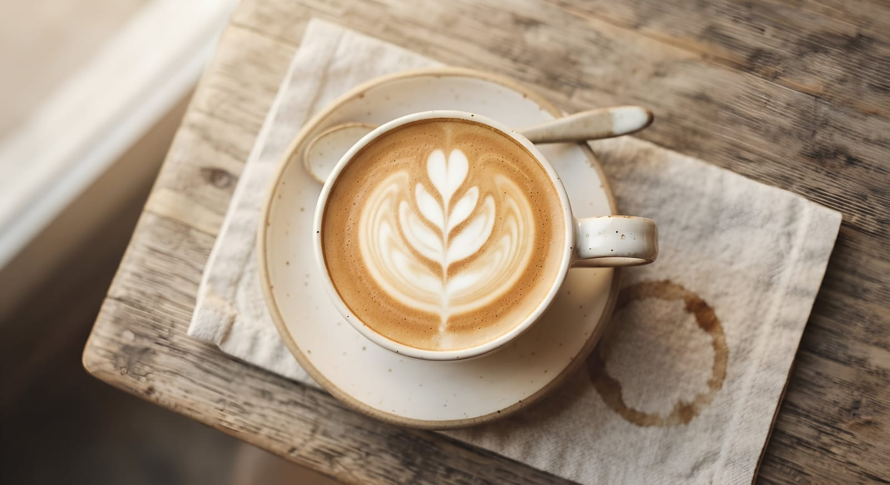
batch
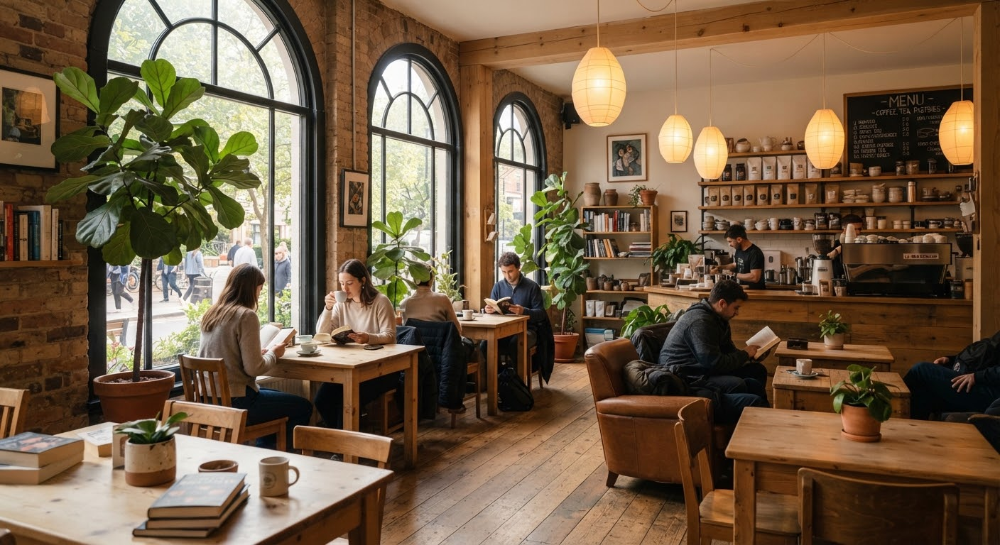
Window bench quiet
In the cup
Every pour is a small moment.
From the oven
Fresh, golden and still warm.
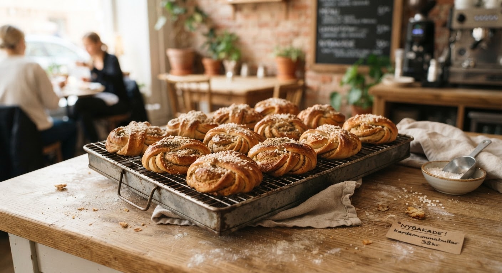
Sunrise bake
Buns cooling on the rack with crushed black cardamom.
butter
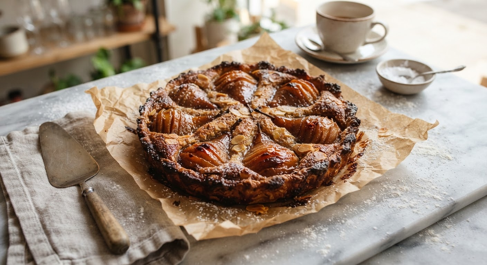
Tart season
Pear and almond slices on brown butter shortcrust.
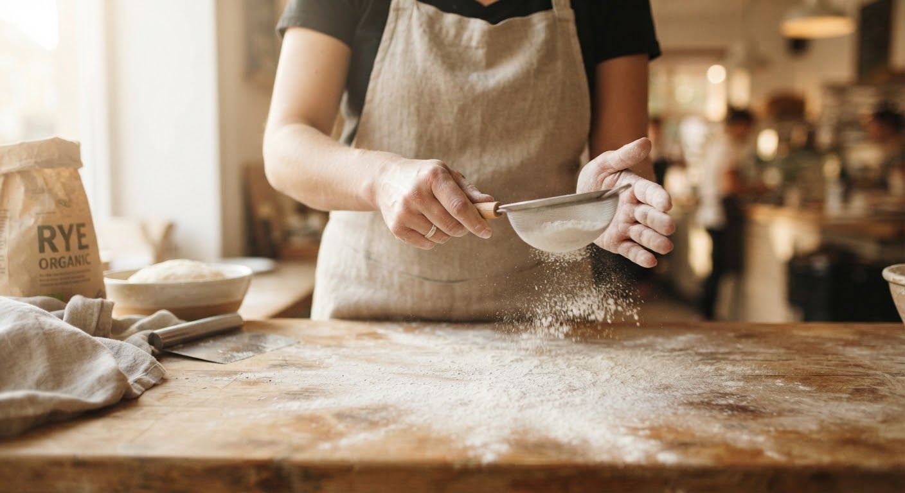
Flour & fold
Thirty-six hours of natural fermentation.
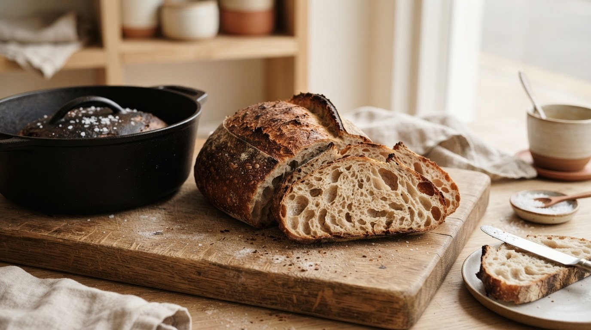
Fresh loaves
Sourdough with a crisp crust and tender open crumb.
The space
Six tables, a long window bench and a wall of plants.
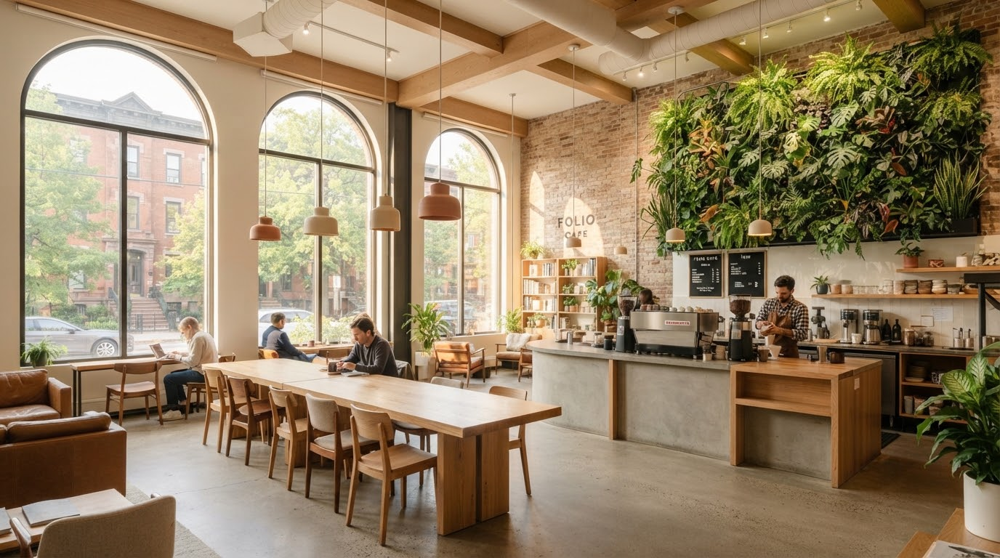
Designed to slow down breath. We kept the original 1920s brick, poured raw unsealed lime plaster, and let the morning light do the rest.
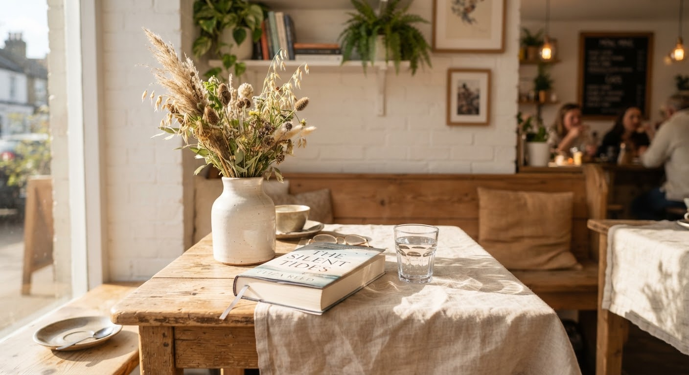
The sunny table four
Best before 11:00 am
Daily life
Readers, writers, friends and neighbors.
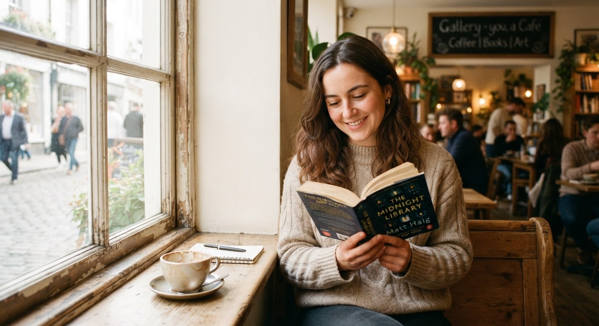
Saturday reading
Quiet morning with a book. No one rushes you to turn the table. Turn another page, let the tea steep a little longer, and watch the street slowly wake up.
Friends and cake
Sharing a slice. Two dessert forks, warm laughter that bounces off the lime plaster walls, and catching up on everything that couldn’t be said in a text.
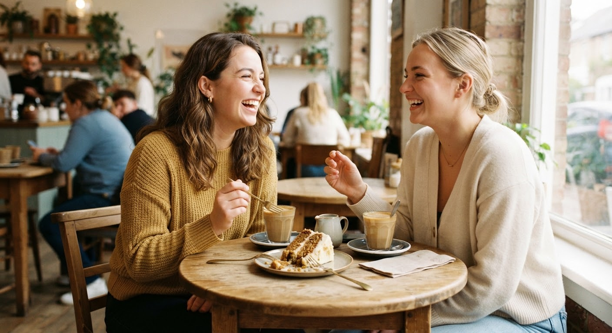
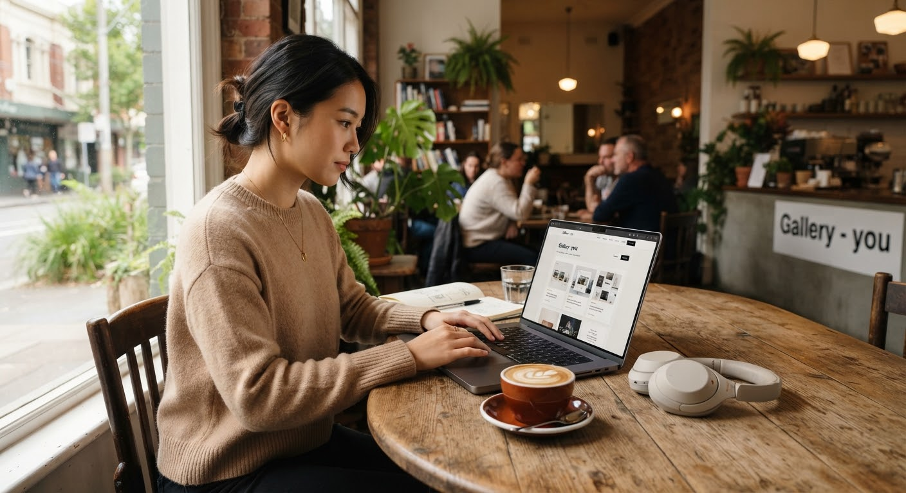
Laptop corner
A perfect place to focus. Plugs tucked discreetly under the timber benches, steady warm light, and continuous fresh pour-overs while you get things done.
Come find your favorite corner
Walk in any morning or afternoon. No reservations needed — just come as you are.